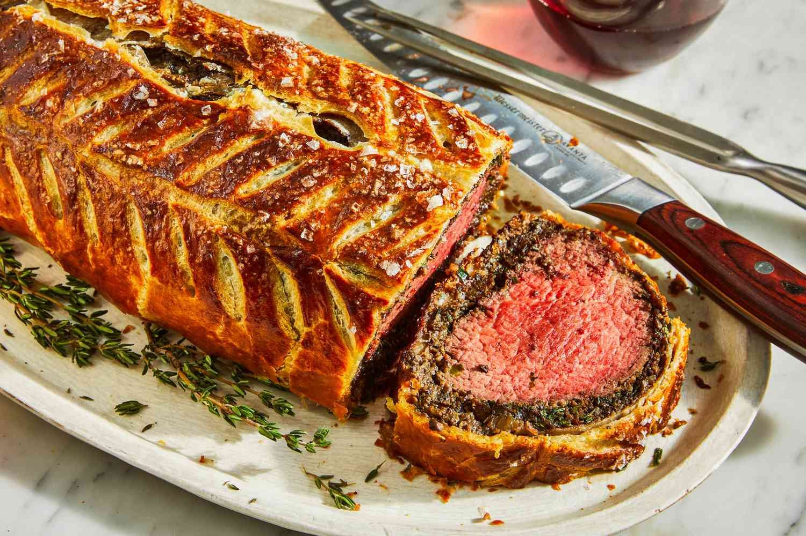

Populer
Nasi Goreng
Tumis bawang putih, masukkan nasi, telur, kecap, dan garam. Selesai dalam 15 menit!
15 menit
Mudah

Ayam Goreng Crispy
Ayam dilumuri bumbu, dibalut tepung, lalu digoreng renyah. Cocok untuk bekal anak!
40 menit
Normal

Sayur Sop
Rebus wortel, kentang, kol, dan ayam dalam kaldu gurih. Cocok disantap hangat.
30 menit
Mudah

Baru
Telur Dadar Gurih
Campur telur dengan daun bawang dan sedikit tepung, lalu goreng hingga keemasan.
10 menit
Mudah

Spaghetti Saus Tomat
Rebus spaghetti, buat saus dari tomat, bawang, dan oregano. Sederhana dan lezat!
25 menit
Normal

Pancake Sarapan
Campur tepung, telur, susu, dan gula. Masak di atas teflon anti lengket. Sajikan hangat!
20 menit
Mudah

Sup Ayam Jahe
Hangatkan badan dengan sup ayam berkuah kaldu jahe yang menenangkan.
45 menit
Normal

Sehat
Salad Segar
Paduan sayuran renyah dengan dressing lemon-madu yang menyegarkan.
15 menit
Mudah

Beef Wellington
Daging sapi tenderloin premium dibalut mushroom duxelles, prosciutto, dan puff pastry yang renyah sempurna.
3 jam
Sulit